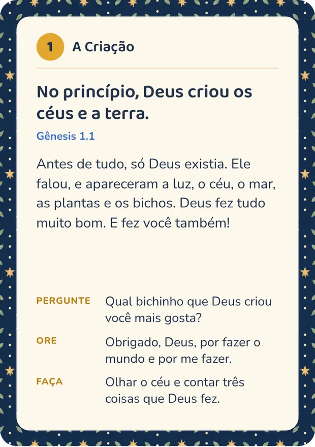
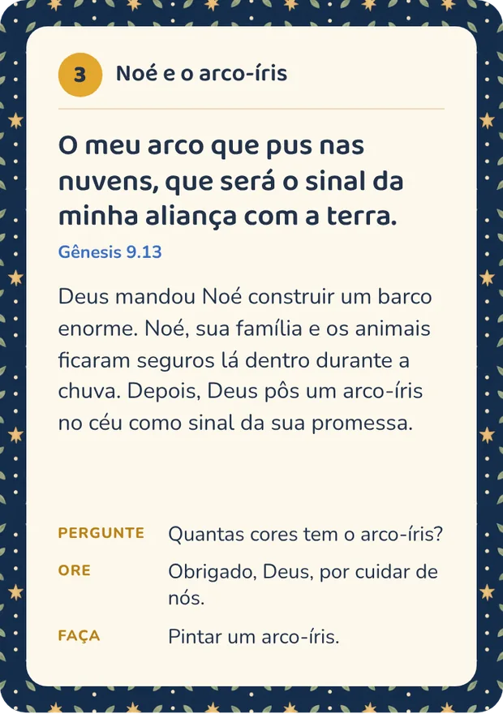
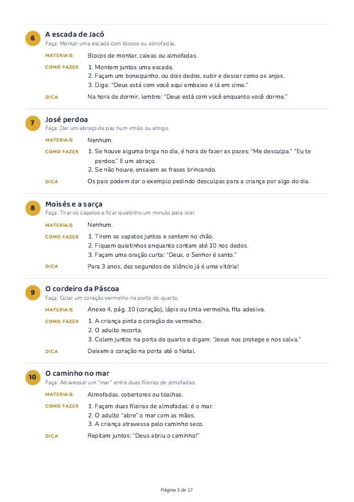
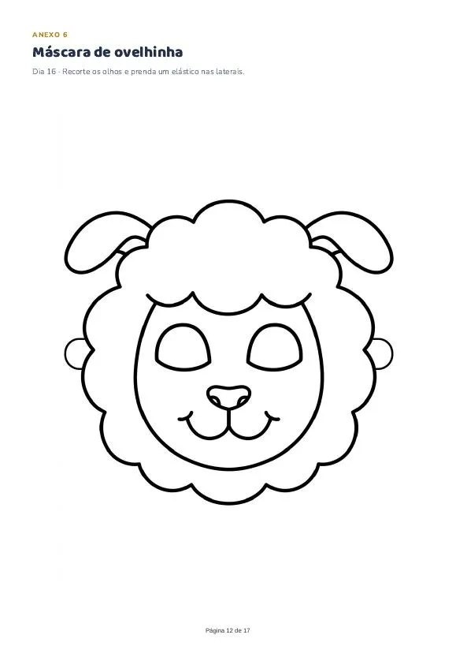
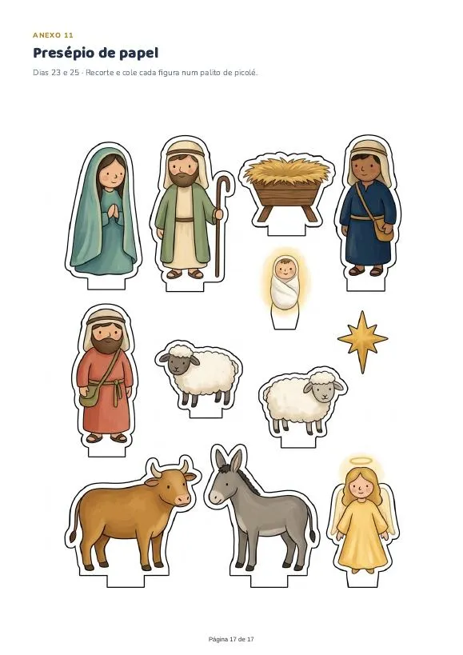

As 25 cartas
- Frente ilustrada e verso com o devocional do dia
- Tamanho 9,6 × 13,6 cm, quatro por folha A4
- Frente e verso já alinhados para imprimir
- Cantos arredondados e linha de corte marcada
Devocional de Advento em cartas
25 cartas para contar às crianças, de 1 a 25 de dezembro, como Deus cumpriu a promessa de mandar um Salvador.
PDF para imprimir em casa
O Advento começa no domingo, 29 de novembro. As cartas vão de 1 a 25 de dezembro.
Como funciona
Na frente, uma ilustração para a criança olhar enquanto você conta a história. No verso, tudo o que você precisa para o devocional do dia.

De 5 a 10 minutos por dia.
Amostra grátis
Baixe as cartas de 1 a 4 de dezembro, com o guia desses dias e os moldes para imprimir: cartão “Eu prometo”, arco-íris para colorir e estrelas para recortar. Imprima, faça com seus filhos e veja se combina com a sua família.
Baixar a amostra grátis (PDF)8 páginas, cerca de 5 MB. Não precisa de cadastro.
25 histórias
Cada carta é um passo da mesma história. Logo no jardim, Deus promete um Salvador. Depois vêm Noé, Abraão, Moisés, Davi e os profetas, até a noite em Belém em que a promessa se cumpre.
O que você recebe




Para a sua família
Pensado para crianças a partir de 3 anos. Os irmãos mais velhos podem ler os versículos e ajudar nas atividades.
Cada história aponta para Jesus. Nas ilustrações, Deus não é desenhado: a presença dele aparece como luz.
Você imprime, recorta e começa. As atividades usam o que já tem em casa: almofadas, caixinhas, giz de cera.
Comece no dia 1º de dezembro
Imprima até o fim de novembro e deixe as cartas num potinho na mesa do café. Todo dia, uma nova.
R$19,90
As vendas abrem em breve. Enquanto isso, baixe a amostra grátis.
Produto digital. Nada é enviado pelo correio.
Dúvidas
Não. Você recebe dois arquivos em PDF para imprimir em casa ou numa gráfica rápida.
Logo depois do pagamento, os links para baixar chegam no seu e-mail.
As ilustrações ficam mais bonitas em cores. Se não tiver impressora, leve o PDF a uma gráfica rápida e peça impressão frente e verso, em papel de 180 g ou mais.
Foi pensado para crianças a partir de 3 anos, com histórias curtas e atividades simples. Crianças maiores também aproveitam.
Tudo bem. Junte duas cartas num dia até alcançar a data, ou siga no seu ritmo até o Natal.
Sim, quantas vezes precisar para a sua família. Pedimos só que não compartilhe nem revenda o arquivo.
Os versículos estão na Nova Versão Internacional (NVI), completos.